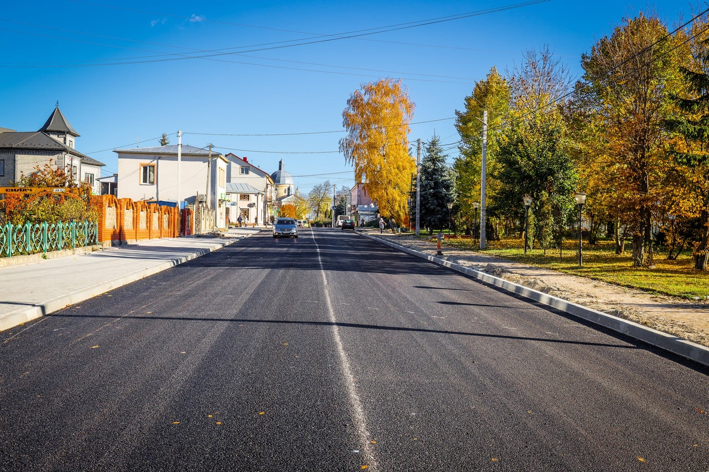

2016
First YouTube channel
I began posting entertainment videos. The channel was later deleted, but it gave me my first experience of creating content.
Something personal
My name is Bohdan, and online I go by Indi Mops or Mosia. This is an updated version of the page I began back in college: no outdated profile details, but the same story.

I am from Skalat, a small town in the Ternopil region. Many of my early memories are tied to it, and after school my studies brought me to Zboriv.
The old site was part calling card, part web development exercise, and part place to keep everything that mattered: my projects, translations, games, and small personal stories. I kept that idea, even though the code itself is now completely different.
In the first version of this page, I wrote about games, anime, manga, music, volleyball, and travelling around Ukraine. Those interests later grew into translation and programming projects.
Archived timeline
A few verified milestones from the old page — not a current status, but the story of how it began.
I began posting entertainment videos. The channel was later deleted, but it gave me my first experience of creating content.
I became interested in mobile game development with Sketchware and dedicated my next channel to it.
I began learning web development in 2019 and Python in late 2020. That led to my first repositories and bots.
My first work was the short manga “The Boy Who Became a Cat”. More translations and a dedicated site archive followed.
The site brought together my personal story, projects, translations, and gaming journal, preserving that moment in time until this redesign.
From the old archive
A small glimpse of my early content-creation period. I keep it here not as a showcase piece, but as an honest part of this site's history.